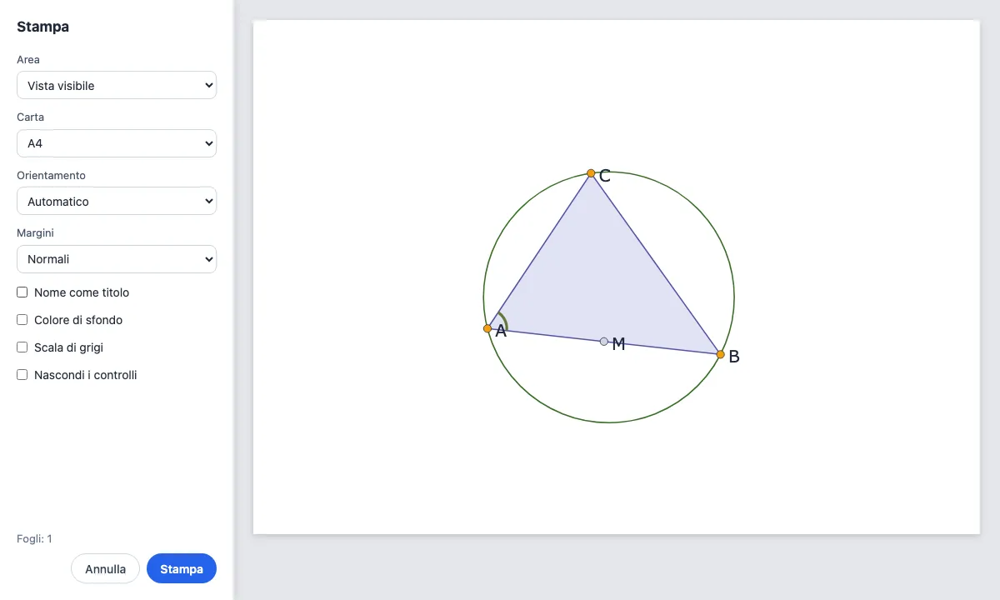
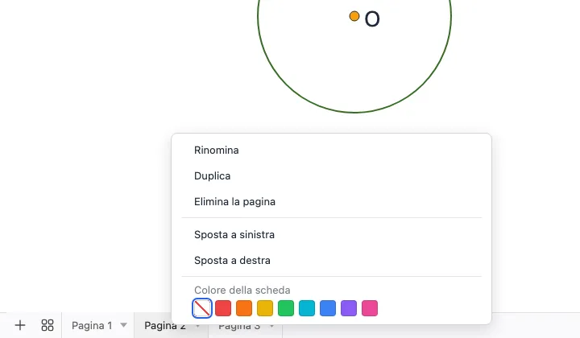

Aprire e salvare
Aprire
Apri carica un file:
| Estensione | Origine |
|---|---|
.dgo |
DocGeo, formato nativo |
.dgp |
DGPad, importato |
.ggb |
GeoGebra, importato |
Si può anche trascinare l’icona del file sulla pagina, nell’editor come nel lettore.
La figura aperta sostituisce quella corrente e svuota la cronologia degli annullamenti.
Una figura online si apre anche tramite un link (vedi Condividere una figura tramite un link).
Il menu File offre anche Apri… (Ctrl O) e Nuova figura, che parte da una figura vuota.
Documenti recenti
File › Apri un documento recente elenca le ultime dieci figure aperte o salvate, la più recente in cima: in Chrome ed Edge, i file del computer; in tutti i browser, le figure aperte tramite un link. Il browser può chiedere di nuovo il permesso di leggere il file. Un file spostato, rinominato o eliminato nel frattempo viene segnalato e tolto dall’elenco. Cancella l’elenco lo svuota.
Importazione incompleta
Un elemento di DGPad o GeoGebra non supportato viene ignorato insieme ai suoi dipendenti; il suggerimento ne dà l’elenco («Non importato: …»). I dettagli sono in Importazione da DGPad e GeoGebra.
Salvare
, File › Salva o
Ctrl S salva la figura in
.dgo. La vista (zoom, orientamento 3D, sistema di
riferimento) viene salvata.
In Chrome e Edge, DocGeo salva come un’applicazione: il primo
salvataggio chiede dove mettere il file, i successivi lo
sostituiscono senza chiedere. Una figura
.dgo aperta con o trascinata
sulla pagina viene salvata nel suo file; il browser chiede una
volta il permesso di modificarlo. Una figura DGPad o GeoGebra
non viene mai sovrascritta: il suo primo salvataggio crea un
file .dgo. Salva con nome… (Ctrl
Maiusc S) sceglie un altro file.
Il nome del file appare alla fine della barra dei menu; un punto rosso segnala modifiche non salvate. Scompare al salvataggio, o annullando fino allo stato salvato. Spostare o ingrandire la vista non conta come modifica.
Negli altri browser (Firefox, Safari), o quando DocGeo è
integrato in un’altra pagina, il salvataggio scarica la figura
con il nome della figura aperta (figure.dgo per una
figura nuova).
.dgo è l’unico formato di salvataggio: aprire una
figura di DGPad o GeoGebra e salvarla la converte.
Recuperare una figura non salvata
Finché una figura ha modifiche non salvate, DocGeo ne conserva una copia nel browser. Se l’editor si chiude prima che sia salvata (finestra chiusa per sbaglio, arresto anomalo), compare, con la sua data, sotto Figure non salvate in cima a File › Apri un documento recente: scelta, torna, ancora segnata come non salvata. Queste copie sono conservate per quattordici giorni, al massimo dieci; anche Cancella l'elenco le cancella.
Questa copia resta nel browser di questo computer: non sostituisce il salvataggio. Non viene conservato nulla quando DocGeo è incorporato in un’altra pagina.
Stampare
File › Stampa… (Ctrl P) mostra l’anteprima dei fogli accanto alle loro impostazioni. Stampa apre poi la stampa del browser, che permette anche di salvare in PDF.

La figura riempie il foglio fino ai margini: rette e curve arrivano al bordo. All’inizio non viene mai ingrandita: tratti ed etichette mantengono la loro dimensione sullo schermo.
- Trascinare su un foglio sposta la figura, la rotellina la ingrandisce o la riduce. La vista dell’editor non cambia.
- Area: Vista visibile centra il foglio su ciò che mostra lo schermo, senza la parte nascosta dalla tavolozza degli strumenti o dalle proprietà; Solo la figura lo centra sugli oggetti disegnati.
- Carta, Orientamento (Automatico: secondo l’area) e Margini. Cambiare queste impostazioni, l’area o il titolo reinquadra i fogli.
- Nome come titolo scrive il nome della figura, o della pagina, in cima al foglio; Colore di sfondo stampa lo sfondo della figura; Scala di grigi toglie i colori; Nascondi i controlli toglie cursori, caselle di controllo, campi, elenchi e pulsanti.
- In una cartella di lavoro, Tutte le pagine stampa un foglio per pagina.
Esc o Annulla chiude l’anteprima. Le impostazioni restano le stesse fino alla chiusura dell’editor.
Cartelle di lavoro: più pagine
Una cartella di lavoro riunisce più figure, le sue pagine, in un
solo file .dgo. Le sue schede, sotto la figura,
mostrano una pagina alla volta.

- File › Nuova pagina aggiunge una pagina vuota dopo le altre: la figura corrente diventa la pagina 1. Poi il pulsante + all’inizio delle schede fa lo stesso, e il pulsante accanto elenca tutte le pagine.
- Un clic destro su una scheda, o sulla sua freccia ▾, apre il menu della pagina: Rinomina, Duplica, Elimina la pagina, Sposta a sinistra o Sposta a destra, e il Colore della scheda.
- Un doppio clic su una scheda rinomina la sua pagina (Invio conferma, Esc annulla); due pagine non possono avere lo stesso nome. Una scheda trascinata cambia posto.
- Le pagine sono indipendenti: ognuna ha i suoi oggetti, i suoi assi, le sue macro e la sua cronologia di annullamento, ritrovata quando ci si torna. Una formula può però leggere un valore di un’altra pagina (Leggere un’altra pagina). Le globali dei programmi sono invece comuni a tutta la cartella di lavoro (Blocchi e tartaruga).
- Il salvataggio scrive tutta la cartella di lavoro, ogni pagina come la si è lasciata; la pagina mostrata è quella che si aprirà. Una cartella di lavoro ridotta a una pagina torna a essere una semplice figura.
Anche il lettore mostra le schede. Una figura integrata in una pagina web mostra solo la pagina visualizzata al momento del salvataggio.
Condividere una figura tramite un link
Una figura caricata online si apre tramite un link: l’indirizzo
dell’editor, seguito da ?url= e dal link del file,
incollato così com’è.
https://doctools.org/apps/docgeo/editor.html?url=https://www.dropbox.com/scl/fi/…/thales.dgo?rlkey=…&dl=0Il link del file può provenire da:
| Servizio | Link da copiare |
|---|---|
| Google Drive | link di condivisione, accesso «Chiunque abbia il link» |
| Dropbox | link di condivisione |
| OneDrive |
link di condivisione di un account personale
(https://1drv.ms/u/c/…)
|
| Nextcloud | link di condivisione pubblico, senza password |
| Sito web |
indirizzo del file (.dgo,
.dgp o .ggb)
|
Il formato è riconosciuto dal contenuto del file, e il suo nome
appare alla fine della barra dei menu. Il file online non viene
mai modificato: il salvataggio crea un file
.dgo sul computer.
?url= va per ultimo nell’indirizzo: tutto ciò che
segue fa parte del link
(editor.html?lang=en&url=…).
Incorporare una figura in una pagina web
Una figura pubblicata online può anche essere mostrata, manipolabile, in una pagina web: vedi Incorporare in una pagina web.
Lingua
DocGeo usa la lingua del browser; ?lang= la impone
(ar, de, el,
en, es, fr,
hi, it, nl,
pt, zh, zh-TW). La lingua
stabilisce anche il nome dei comandi (PuntoMedio,
Mittelpunkt…); i nomi inglesi sono
compresi in tutte le lingue.